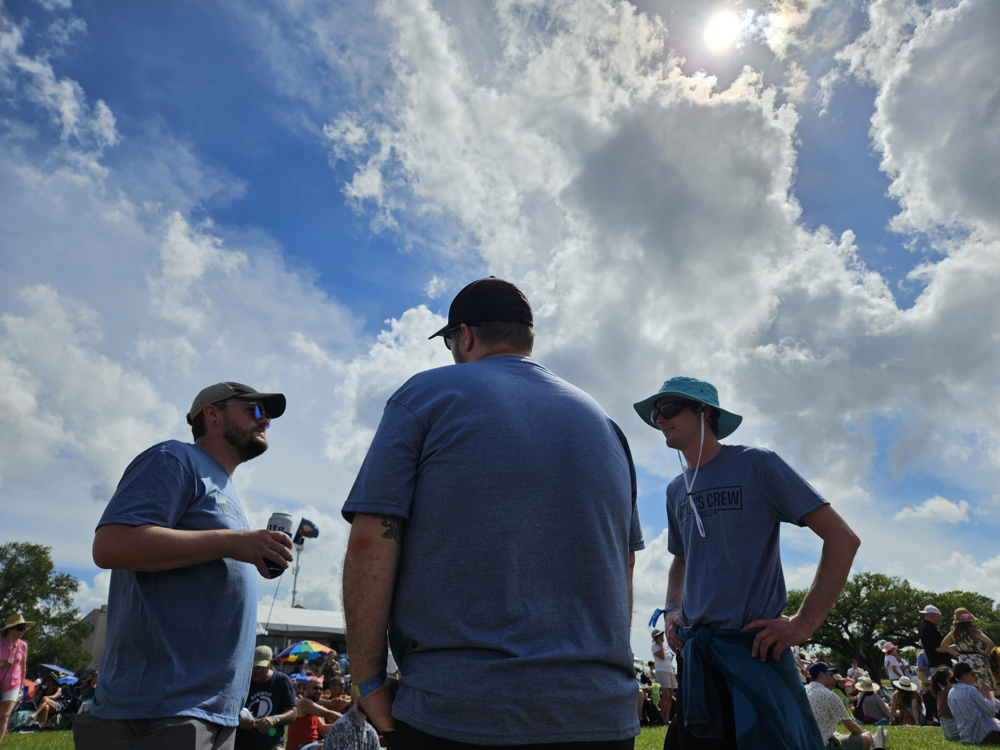

This will be a brief story about my recent trip to New Orleans. I went for a good
friends bachelor party. We attended the Jazz Festival and went down to Bourbon Street.

New Orleans, sister city to St. Louis, is the perfect place for a bachelor party. It's cheap and
there is a lot to do. We had tickets to the Jazz Festival, which is the majority of what we did. Jazz
Fest has been going on since 1970 and host a plethora of musical acts and food. The fesival takes place
over 2 weekends and we attend the first. I have always wanted to attend the festival, so this was shaping
up to be a exciting trip.Here is a picture of a few of the guys getting ready to head to the festival. From right to left it
is Jason, Jacob, and Garrett. Jacob is the groom in question. We wait patiently for our Uber in the
French Quarter, ready for some music, good food, and friendly bonding. And as you can see, we all wore
matching shirts like a bunch of goobers.After getting in and grabing some food we made our way to the stage. I saw a lot of musical acts
all weekend, but barely remember who. I didn't reconize much of the lineup, so everyone was new to me. I
did take note of the Preservation Hall Jazz Band, which are on stage in this photo. They were amazing.
Thoughout the entire festival the weather was amazing. Nothing but clear blue skys and nice
temperatures. It was perfect for being out at on the festival grounds. Here is a photo of a few of the guys
enjoying the beautiful weather.After the festival ended on the first day we hit the town and walked down to Bourbon Street. Our hotel
was in the French Quarter, so it wasn't a long walk. We made our way down bourbor stoping into whereever
looked interesting and eventually made out way to Frenchman Street and stopped for a late night concert.
The late night show we attended was Honey Island Swamp Band. A band we all were familiar with and fans
of. The place was packed but I managed to make my way to the front and snap a few pictures. They played well
and had a lot of energy. We meet a few people and got some free drinks then headed back to the hotel.
Our hotel had a courtyard so when we got back we snatched a table and spent the rest of the night
there. Here you can see a photo of us in the courtyard taken from our hotel room window. A very relaxing way
to end the night and converse about the day we just had.All and all it was a wonderful trip. Plenty of music, good food, and comradery. I would 10/10
recommend to anyone to visit New Orleans. And it doesn't even need to be during Jazz Fest. There is plenty
to do and fun to be had.It is one of my favorite cities to visit and will be back again.